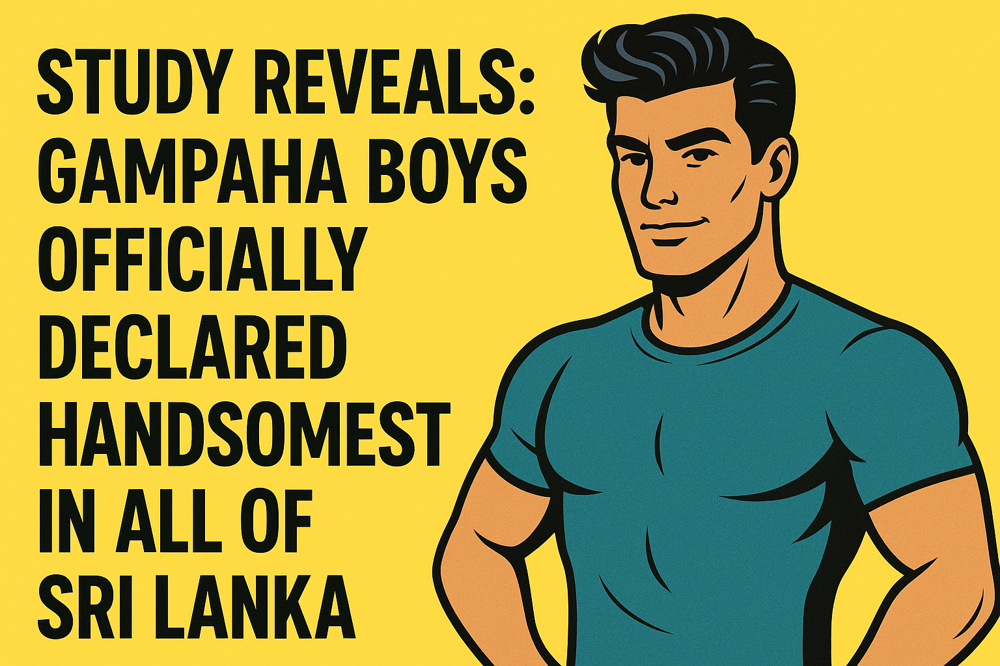

Gampaha Genetic Mastery
Researchers traveling across Sri Lanka concluded that Gampaha boys dominate the jawline and eyebrow game. Other districts? Not even close.
Studies reveal the jawline supremacy of Gampaha boys—and the internet can’t handle it. Satire, obviously!
Researchers traveling across Sri Lanka concluded that Gampaha boys dominate the jawline and eyebrow game. Other districts? Not even close.
In a groundbreaking revelation that has left the rest of the country scrambling for mirrors, a recent study has concluded that the boys of Gampaha are, without a doubt, the best-looking males in Sri Lanka.
Researchers reportedly traveled across all 25 districts, evaluating jawlines, cheekbones, and eyebrow perfection. When asked about the results, lead scientist Dr. Nimal “Chiseled Face” Perera commented, “It’s not even close. Gampaha’s boys make the rest of the country look like it’s been hit by a bus.”
Social media erupted, with hashtags like #GampahaGlow and #SorryNotSorry trending nationwide. Local girls reportedly refuse to leave the district, fearing they might accidentally date someone from anywhere else.
Officials in neighboring districts are drafting emergency eyebrow-raising programs and jawline enhancement workshops to compete—but insiders say, “Good luck. Gampaha genetic coding is unmatched.”
Experts warn: prolonged exposure to Gampaha boys may cause chronic heart eyes and excessive selfie-taking.
Disclaimer: This article is satire and intended for entertainment purposes only.
රටේ අනෙක් කොටස් සියල්ල මිරිස් සහ වෙන්දේසියක් සමග උනන්දුවෙන් සිටින අතර, නවතම පර්යේෂණයකින් ගම්පහ කොල්ලෝ ශ්රී ලංකාවේ ලස්සනම කොල්ලෝ බව නිර්ණය කර ඇත.
පර්යේෂකයින් සියලුම දිස්ත්රික්ක 25ක් පුරා ගොස්, තොල්, ළපටි, හා කුසල ඇස්වල සම්පූර්ණත්වය ඇගයූහ. ප්රධාන විද්යාඥයෙක්, නියම “චිස්ල්ඩ් ෆේස්” පෙරේරා පැවසුවේ, “එය ඉතා පැහැදිළි වේ. ගම්පහ කොල්ලෝ අනෙක් රටේ කොල්ලෝ බස් එකක මත වැටී ඇති මෙන් පෙනේ.”
සමාජ මාධ්ය දැඩි ලෙස හරිතව, #GampahaGlow සහ #SorryNotSorry යන හැෂ්ටැග් ජනප්රිය වෙයි. දේශීය ගැහැනුහු දිස්ත්රික්කයෙන් පිටව යාම වැළකී සිටින බවත්, අනෙක් දිස්ත්රික්ක කොල්ලොවෙක් සමඟ හදිසියෙන් පෙම් බැඳී යාම බිය වෙන බවත් වාර්තා වේ.
ආසන්න දිස්ත්රික්කයේ නිලධාරීන් හුස්මක් ගන්නා වැඩසටහන් සහ තොල්/ජෝලා වැඩමුළු සැලසුම් කරන බව වාර්තා වුවත්, “හොඳ වෙලාවක්. ගම්පහ ජාන අනුපිළිවෙළ අසමානයි” යනවා ඇසෙනවා.
විශේෂඥයින් අනතුරු අඟවන්නේ: ගම්පහ කොල්ලෝ සමඟ දිගු කාලීන සම්බන්ධතා ඇති වීමෙන් හෘදයාබාධ, සහ ස්වයං ඡායාරූප රූපගත කිරීමේ අධිකතා ඇති විය හැකි බවයි.